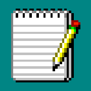
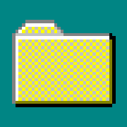
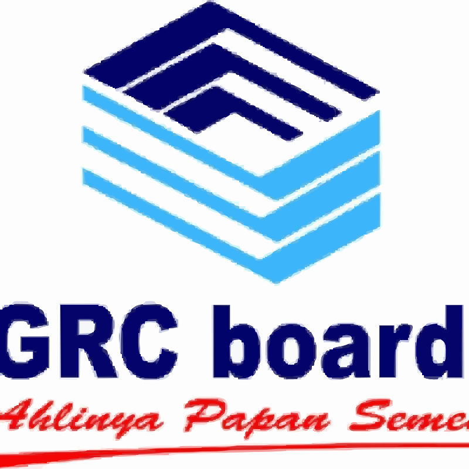

I’m a frontend-focused Software Engineer with 6+ years of experience building fast, accessible, and
maintainable web apps. My core stack centers on .NET 10 Blazor (WASM/Server) and MAUI for hybrid
experiences, plus modern JS frameworks like Angular and Vue, and Node.js on the back end when
needed.
I’ve shipped data-heavy UIs, role-based auth flows, and responsive layouts, optimized bundle size
and
loading times, and set up CI/CD and Dockerized deployments for reliable releases. I enjoy
collaborating
across design and product to turn ideas into smooth, production-ready experiences.

ERP GRC BoardChoose communication channel:
Software Engineer
GRC Board – Jakarta, Indonesia
05/2025 – Current
- Architected and developed ERP application using MAUI Blazor Hybrid, leveraging a single codebase to deliver a consistent user experience across Android, iOS, Windows, and macOS.
- Develop modular UI components using Razor and CSS/Sass, ensuring the ERP interface remained responsive and accessible across various device form factors.
- R&D on the MAUI framework to solve complex performance bottlenecks and hardware integration challenges for enterprise users.
- Collaborated with back-end teams to consume RESTful APIs, ensuring secure and real-time data synchronization for critical business modules.
Software Engineer
Bank Mandiri – Jakarta, Indonesia
06/2023 - 05/2025
- Develop front-end interfaces for flagship financial products including Livin KPR and Livin Autoloan, focusing on user retention and smooth application workflows.
- Optimized API integration between the front-end and back-end services, reducing latency and improving the overall responsiveness of the mobile-web hybrid environment.
- Develop a dedicated web application to support the Livin Merchant Android app, utilizing Asp.Net Web Form and Vanilla JS to manage merchant app features and analytics.
Front End Developer
NTT Indonesia Technology –
Jakarta,
Indonesia
11/2018 – 10/2022
- Develop responsive front-end architectures project myCore Bca and myPartner Bca using the Angular framework, successfully translating complex UI/UX designs into high-performance, production-ready code.
- Streamlined data flow by collaborating with back-end teams to integrate UI components with secure APIs and databases, ensuring seamless synchronization with the Bank BCA ecosystem.
- Utilized HTML, SCSS, and TypeScript to create visually appealing and responsive web pages that met client requirements.
Front End Developer
Tujuh Sembilan, Bandung,
Indonesia
05/2018 – 10/2018
- Bootcamp about understanding algorithms, database relations, java programing language and Angular Framework.
- Participate in working on the Human resource management system project of PT. Tujuh Sembilan